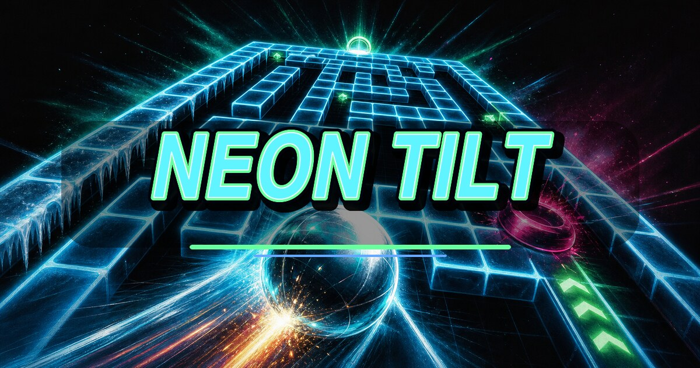

SCORE0
LEVEL1
LIVES3
TIME0:00
⌂
TOUCH
INCLINA il telefono per guidare la biglia.
Touch/frecce restano sempre disponibili.
RETROWEBGAMES • GRAVITY MAZE

🏆 HIGH SCORES
TILTPHYSICS12+ MAZE
BEST 0
TORNA AL MENU
Al primo avvio il browser potrebbe chiedere accesso ai sensori di movimento.